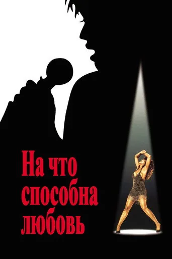

На что способна любовь 1993
Мало кому из суперзвезд рока выпадала такая драматичная судьба, как Тине Тернер. Урожденная Анна Мэи Баллок, эта скромная девушка, казалось, вытянула счастливый билет в тот момент, когда ее мужем стал удачливый музыкант и продюсер Айк Тернер. Она и в страшном сне не могла предвидеть, что когда ее слава перерастет популярность мужа, ее жизнь станет кошмаром. Айк превратился из прекрасного парня в монстра, из ревности к ее известности избивавшего супругу до полусмерти. И кто знает, как сложилась бы судьба певицы, если бы не музыка. Она была ее призванием. Она же стала силой, помогшей преодолеть ей все невзгоды и стать той самой Тиной Тернер, которую любят миллионы.
Открыть в каталогеДанные и постеры принадлежат их правообладателям. Этот продукт использует TMDB API, но не одобрен и не сертифицирован TMDB.